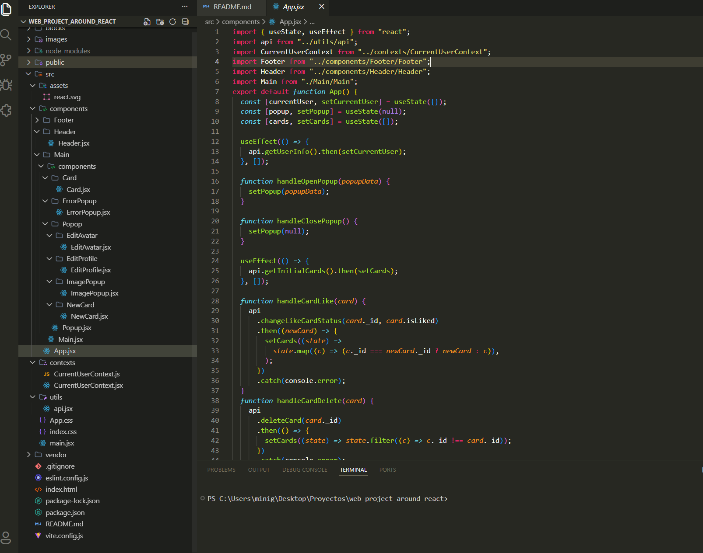
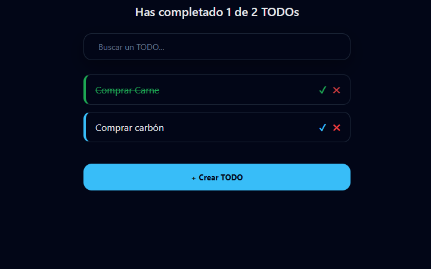
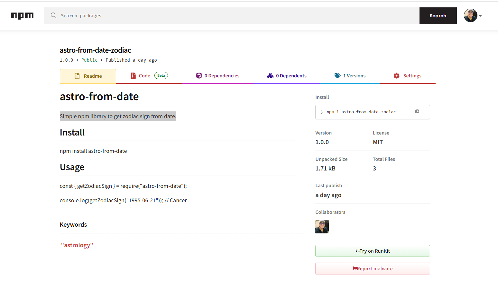
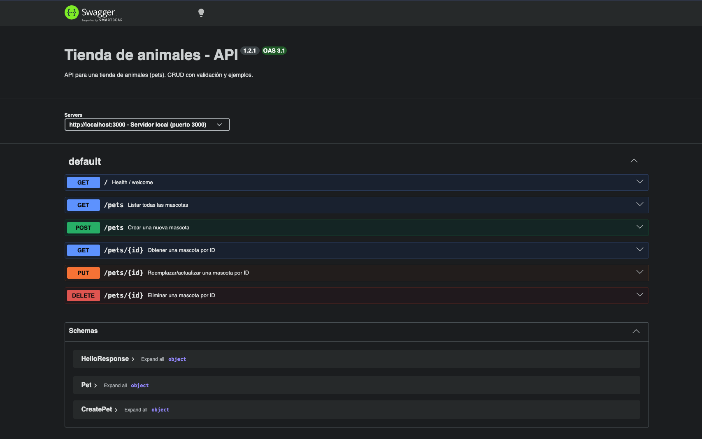

Alrededor del Mundo con REACT - VITE
FULL STACK · TripleTen · 2026
Construimos una aplicación web en React que replica y mejora el proyecto “Around The U.S.”
conectándolo a una API real. Pasamos de HTML + JS clásico a una arquitectura moderna basada
en componentes, estado y contexto. Implementamos popups reutilizables, tarjetas dinámicas,
perfil de usuario editable, sistema de likes, creación y eliminación de cards, y
sincronización completa con el servidor.
Tecnologías:
React, JavaScript (ES6+), Vite, CSS (metodología BEM), Fetch API (consumo de REST API), React Hooks
(useState, useEffect, useContext, useRef), Context API, JSX, Git / GitHub.
Ver proyecto

ToDo App Web - React.js
Proyecto Personal · React.js · 2026
Hice el desarrollo de una Aplicación web de gestión de tareas desarrollada con React,
enfocada en una experiencia de usuario moderna y fluida. El proyecto permite crear,
buscar, completar y eliminar tareas, incorporando animaciones y estados de carga que
simulan comportamientos reales de aplicaciones en producción.
Tecnologías:
React (Hooks, Context API), JavaScript (ES6+), CSS3 (animaciones y transiciones), LocalStorage, Vite
Ver proyecto

Alrededor del Mundo
FULL STACK · TripleTen · 2026
Hice el desarrollo de una aplicación web interactiva, que resultó en
una gestión dinámica de perfiles y tarjetas con datos persistentes,
usando JavaScript, API REST y programación orientada a objetos.
Tecnologías:
HTML, CSS, JavaScript, React, Node.js, Express, REST API
Ver proyecto
Fiorejaz.com
Servicios Operativos Fiore Jaz S.A. de C.V
Brindé colaboración en la implementación y ajuste del sistema de
facturación, que resultó en un proceso más eficiente y ordenado para
la emisión de comprobantes fiscales, usando herramientas
administrativas, manejo de datos y flujos de facturación.
Tecnologías:
Shopify, sistemas de facturación electrónica,
manejo de procesos administrativos
Ver proyecto
astro-from-date
NPM · Proyecto Personal · 2026
Esta es una librería npm simple y ligera que
permite obtener el signo zodiacal a partir de una
fecha de nacimiento. Está diseñada para ser fácil de usar,
rápida de integrar y sin dependencias pesadas. Solo necesitas pasar el día y el mes
Tecnologías:
JavaScript, Node.js, npm.
Ver proyecto

Tienda de animales — API
FULL STACK · Proyecto Personal · 2026
Este repositorio contiene una API minimalista para gestionar una
"tienda de animales" (pets). Está diseñada para desarrollo y demostración
con validación OpenAPI, una pequeña base de datos (JSON) y documentación Swagger.
Tecnologías:
Node.js, Express, OpenAPI, Swagger, JavaScript.
Ver proyecto
